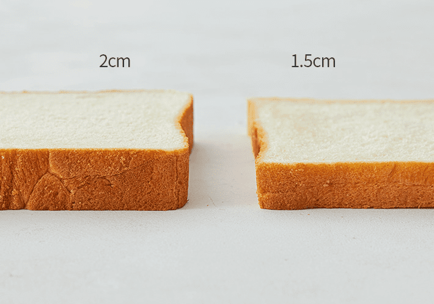

빵의 두께를 조절합니다
토스트를 바삭하게 굽기 위해서는 빵의 두께를 조절할 수 있습니다. 너무 뚜꺼운 빵은 속까지 부드럽게 익는데 한계가 있을 수 있스빈다. 얇은 빵은 더 빠르게 익혀지며 바삭한 결과물을 얻을 수 있습니다. 하지만 토스트의 두께는 개인의 취향이 반영되니 그에 맞게 선택해주세요.

토스트를 바삭하게 굽기 위해서는 빵의 두께를 조절할 수 있습니다. 너무 뚜꺼운 빵은 속까지 부드럽게 익는데 한계가 있을 수 있스빈다. 얇은 빵은 더 빠르게 익혀지며 바삭한 결과물을 얻을 수 있습니다. 하지만 토스트의 두께는 개인의 취향이 반영되니 그에 맞게 선택해주세요.
1. 두꺼운 빵을 구울때는 내부까지 완전히 익혀야 하기 때문에 굽는 시간을 더 길게 가집니다.
2. 두꺼운 빵의 경우 중간부터 점차적으로 열을 줄여 굽는 것이 좋습니다. 이렇게 하면 외부는 골고루 구워지고 내부까지 완전히 익힐 수 있습니다.
1. 얇은 빵은 빠르게 굽는 것이 좋습니다. 짧은 시간 동안 굽는 것으로 외부는 바삭하게, 내부는 부드럽게 만들 수 있습니다.
2. 얇은 빵은 고온에서 짧은 시간 동안 굽는 것이 좋습니다.